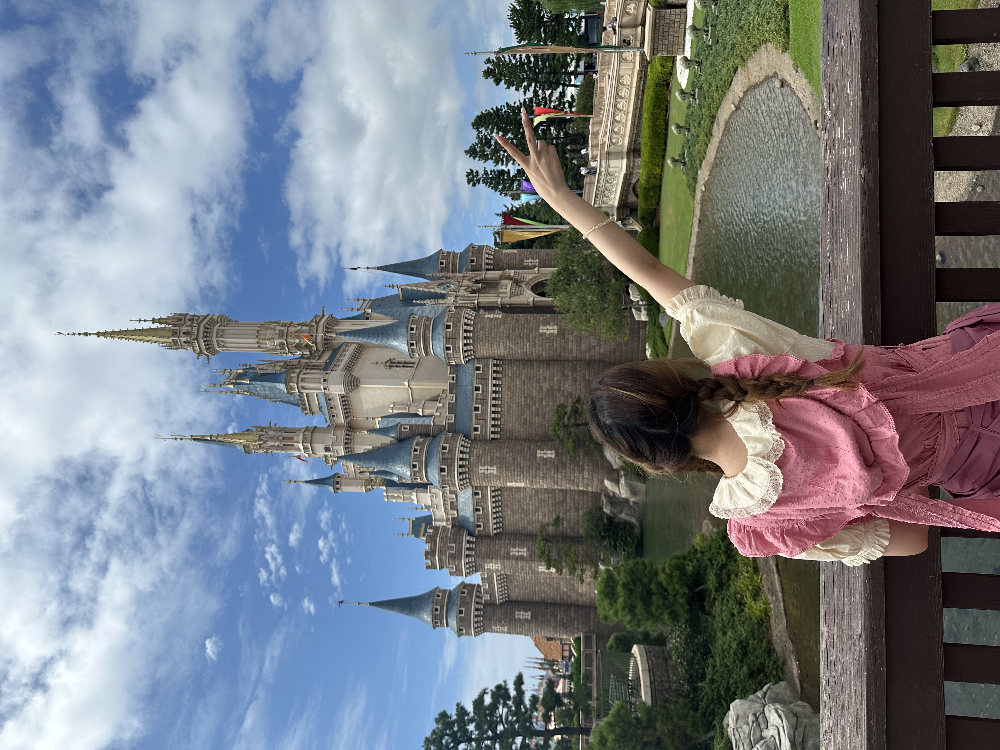

PhD Student, Peking University
Research focused on ESR-STM, electron spin manipulation, and quantum-dot-related systems.
ESR-STM and quantum dots
高亦婷 · PhD Student, Peking University
I am Yiting Gao, a PhD student interested in nanoscale quantum systems, spin physics, and quantum-dot-related research.
My current interests center on the precise manipulation of electron spins through electron spin resonance scanning tunneling microscopy (ESR-STM), with an eye toward controllable quantum states at atomic and molecular length scales.
I received my B.S. from Central South University in 2024, where I worked on nanoscale materials, spintronic composites, and functional nanomaterials.
Publications
Research
Using scanning tunneling microscopy combined with electron spin resonance to probe and manipulate individual spin states with high spatial precision.
Exploring coherent and addressable spin manipulation in nanoscale systems, with attention to local environments, coupling, and readout.
Studying quantum-dot systems and related nanostructures as tunable platforms for confined electronic states and quantum behavior.
Education
Research focused on ESR-STM, electron spin manipulation, and quantum-dot-related systems.
Undergraduate work in materials science and nanoscale functional materials.
Bio
I love travelling, discovering new places, and collecting small moments from different cities and landscapes.
Outside the lab, I enjoy taking photos, wandering through museums and streets, and finding good food with friends.
Research keeps me curious about the microscopic world, while travel keeps me curious about the wider one.
